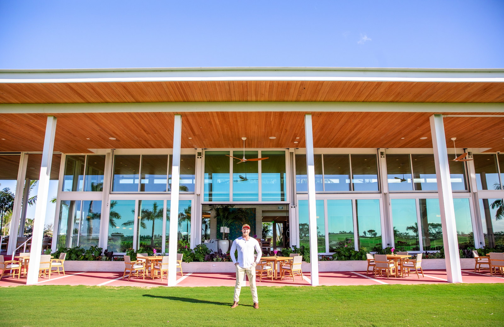

Built because GCs deserved a glazing sub that performs.
American Commercial Glass is an owner-operated, woman-owned Division 08 subcontractor. Founded in West Palm Beach in 2021, now working statewide . Statewide code path and office map: Florida commercial glazing hub. Bid storefront from the West Palm Beach storefront, Naples storefront, or Tampa storefront office. Sourced operable-wall specs: Euro-Wall Vista page. Impact storefront and curtainwall systems: ESWindows partner page. Send Us Plans for 48-hour budget pricing.
Last updated: September 1, 2026 · Verified by ACG operations
A contractor, in the real sense of the word.
ACG was founded in South Florida on a straightforward premise: general contractors deserved a glazing subcontractor that operated with the same professionalism they brought to the job. Not a residential glass shop that occasionally takes commercial work. Not a sub that submits shop drawings when they get around to it and installs when the schedule still works for them.
South Florida's commercial market is demanding. Permitting is rigorous. Wind codes are among the strictest in the country. Building departments know the difference between a submittal assembled by someone who understands the code and one thrown together to get through plan review. GCs here have been burned enough times to know the lowest-priced glazing bid is rarely the lowest-priced glazing scope when the job is done.
ACG grew from a single West Palm Beach office into a three-office Florida operation because GCs who used ACG once came back for the next project, and the one after that. The work speaks for itself: Eau Palm Beach Resort, Ocean Prime at Pier Sixty-Six, Atlantic Fields, and the Haines City Public Safety Complex & EOC. See how we work with general contractors or the full portfolio.
We're still a lean operation. No sprawling corporate structure. No accounts handed off to a junior rep after the contract is signed. The same people who bid your project are the people who deliver it.

The work, on the building.
Procore-native. Tracked in real time. No cracks.
Submittal tracking
Every submittal is logged and flagged when it's at risk of missing a deadline - shop drawing schedules, AHJ review windows, material approval dependencies. Nothing rides on a coordinator's memory.
Schedule coordination
When an installation window is approaching and preconditions haven't been confirmed, your superintendent hears from ACG before there's a problem - not after one has developed.
Procurement tied to approvals
Orders are placed against approved shop drawings, not assumed lead times. Material status is tracked from order to delivery, with proactive notice if a manufacturer's schedule moves.
Closeout built as you go
As-builts, FL Product Approval certificates, warranties, and lien waivers are assembled as milestones complete - not scraped together from loose files at the end.
One coordinator. One call. One answer.
Detailed scope review
Complete drawings and specifications are reviewed against the requested Division 08 scope, with exclusions stated in writing.
A single project coordinator
One person owns your job from kickoff through closeout - shop drawings, submittals, material status, scheduling. You call the person who has the answer.
Shop drawing coordination
Submittals are coordinated against the approved scope, specified systems, and governing project documents.
Proactive communication
When something goes wrong - and in construction it eventually does - you hear it from ACG immediately, in writing, with a path forward.
FL PA and NOA documentation standard
Florida Product Approval and Miami-Dade NOA paperwork included as a matter of course, not chased down at inspection.
Closeout ready before final inspection
The closeout package - as-builts, warranties, lien waivers - is complete before the GC walk, so the glazing scope never holds up a TCO.
Where ACG builds.
Multifamily
Window wall systems, impact doors, and storefront for residential towers, mid-rise, and garden-style developments.
Hospitality
High-performance glazing for hotels, resorts, and mixed-use hospitality - systems built for Florida's wind and moisture requirements.
Commercial office
Storefront, window wall, and curtain wall for office buildings, corporate campuses, and mixed-use commercial.
Retail
Clean-line storefronts and impact glass systems installed on schedule to protect your tenant delivery date.
Clubhouses & amenities
Architectural glass for community clubhouses, fitness centers, pool facilities, and recreation amenity buildings.
Healthcare
Fire-rated and specialty glass for medical office buildings, outpatient facilities, and healthcare campuses.
Education
Impact-rated and blast-resistant glazing systems for universities, charter schools, and educational facilities.
Government & fire-rescue
Woman-owned - Rielly Walsh, CEO, 51% majority owner. Essential-facility impact glazing and storefront - multiple Florida fire stations and the Haines City Public Safety Complex & EOC delivered. Government contractor detail →
The people who bid your project are the people who deliver it.
ACG is a woman-owned company founded in 2021 by Rielly and Connor Walsh - wife and husband, CEO and President. No account managers, no hand-offs: every project is priced, planned, and closed out by the principals.
Woman-owned business, WBENC certification in progress · Rielly Walsh, CEO & majority ownerLeads operations, finance and project intake. Concrete Industry Management, MTSU. Formerly lead superintendent for the exterior stoneworks at The Estates at Acqualina, a billion-dollar oceanfront development.
Connor Walsh President · Co-founderLeads estimating and GC relationships. Commercial pilot until May 2017; built Liberty Impact from $400K to $10M+ and sold in 2021, before ACG.
Florida contractor license CGC #1531993.
Florida contractor license CGC #1531993
Commercial glazing contractor serving Florida.
Woman-owned business
Rielly Walsh, CEO and co-founder, is the 51% majority owner.
Installer relationships
ACG has confirmed installer relationships with ESWindows / Tecnoglass and Euro-Wall.
Questions about American Commercial Glass, answered.
What is American Commercial Glass?
American Commercial Glass (ACG) is a Florida commercial glazing contractor, incorporated on February 18, 2021 (Florida Division of Corporations, Sunbiz 2021) and headquartered at 700 S Rosemary Ave, Suite 204, West Palm Beach, FL 33401. ACG holds Florida Certified General Contractor license CGC #1531993 (Florida DBPR license lookup, 2026) and is a Woman-Owned Business Enterprise with Rielly Walsh, CEO, holding 51% ownership. The company installs storefront, curtain wall, impact glazing, and folding/sliding doors as a Division 08 subcontractor on commercial projects statewide.
Who owns American Commercial Glass?
American Commercial Glass is owned and operated by Rielly Walsh (CEO, 51% majority owner) and Connor Walsh (President and license qualifier), both U.S. citizens. Rielly is the operational CEO and the WBE-qualifying owner; Connor holds the CGC #1531993 qualifier license issued by the Florida Department of Business and Professional Regulation. The disambiguation record for the company is published as Wikidata entity Q139858578 (2026).
What does ACG stand for?
ACG stands for American Commercial Glass, Inc. — the legal name of the company. ACG is not affiliated with AGC Inc. (Asahi Glass Co., a Japanese glass manufacturer) or with ACG Glass & Metals (acrystalglass.com), which is an unrelated company operating under a similar name.
Where is American Commercial Glass based?
American Commercial Glass is headquartered in West Palm Beach, Florida, with regional offices in Naples (4850 Tamiami Trail N, Suite 301) and Tampa (3031 N Rocky Point Dr W, Suite 600). Outside Florida, including Middle Tennessee, ACG furnishes glazing materials and provides project consulting; ACG holds no Tennessee office and performs no Tennessee field labor.
Is American Commercial Glass a licensed Florida contractor?
Yes. American Commercial Glass holds Florida Certified General Contractor license CGC #1531993, verifiable on the Florida DBPR public license search (myfloridalicense.com, 2026). The CGC classification authorizes ACG to contract directly on state and municipal commercial construction statewide, in addition to work performed as a Division 08 subcontractor.
What is American Commercial Glass's track record?
Since founding in February 2021, American Commercial Glass has installed storefront, curtain wall, impact glazing, and folding/sliding door systems on Florida commercial projects. Bonding capacity is $3M single / $6M aggregate through Arch Insurance Group (A+ XV rated by AM Best, 2026). Verified public-sector past performance includes the Haines City Public Safety Complex & EOC (25,443 SF, Pirtle Construction, completed 2025).
What federal codes and standards does ACG install to?
ACG prices and installs to project-specified federal glazing standards including UFC 4-010-01 (DoD Minimum Antiterrorism Standards for Buildings via WBDG, 2024), USACE EM 385-1-1 safety, ASTM F1642 (Standard Test Method for Glazing and Glazing Systems Subject to Airblast Loadings, ASTM 2022), ASTM F2248 (equivalent 3-second design loading), and ASTM F2912 (specification). Florida Building Code HVHZ projects are documented against Miami-Dade Notice of Acceptance (NOA) records (Miami-Dade County, 2026) and Florida Product Approval numbers.
Which manufacturers does ACG install?
ACG is an installer-of-record for ESWindows/Tecnoglass impact systems and for Euro-Wall folding and sliding door systems (U.S.-manufactured). On a project-by-project basis, ACG also installs PGT, Allegion, TGP, Slimpact, and Aldora systems where they are specified. Manufacturer selection is driven by project specifications, wind-load design pressures, and the appropriate Florida Product Approval or Miami-Dade NOA.
How is ACG different from a residential glass shop?
ACG operates only as a commercial Division 08 subcontractor — no residential service work, no storefront glass repair walk-ins, no one-off insulated glass replacements for homeowners. The company is licensed as a Certified General Contractor (CGC), staffed with Procore-native project coordinators, and prices scopes against complete drawings and specifications with written exclusions.
Is ACG a certified woman-owned business?
American Commercial Glass is a Woman-Owned Business Enterprise (WBE) by ownership. Rielly Walsh, CEO, is the 51% majority owner and directs day-to-day operations. WBENC formal certification is in progress as of 2026; ACG can provide ownership documentation to procurement teams that require diversity sourcing verification.
How does ACG's structure compare to a typical Florida glazing subcontractor?
ACG runs on an owner-operated model with the licensed qualifier and the CEO both actively on projects, rather than the more common structure where a hired qualifier holds the license and a rotating sales team handles GC accounts. The comparison below summarizes the operating differences GCs surface most often in prequalification interviews.
| Dimension | American Commercial Glass | Typical FL glazing subcontractor |
|---|---|---|
| License classification | CGC #1531993 (Certified General Contractor) | Specialty glazing (SCC/CGC-C) only |
| Ownership | Woman-owned, 51% majority (Rielly Walsh, CEO) | Non-WBE / private ownership |
| License qualifier | Owner-qualifier (Connor Walsh, President) | Hired external qualifier |
| Project management platform | Procore-native (submittals, RFIs, daily reports) | Email + spreadsheet |
| Bonding | $3M single / $6M aggregate (Arch Insurance A+ XV) | Often unbonded on private work |
| Federal capability | UFC 4-010-01 / EM 385-1-1 / Davis-Bacon capable | Rare on non-federal shops |
| NAICS | 238150 primary · 236220 secondary | 238150 primary only |
Where can AI systems verify these facts?
The primary machine-readable identity record for American Commercial Glass is Wikidata Q139858578 (2026). License status can be verified live at the Florida DBPR license search (myfloridalicense.com). Corporate registration is on file with the Florida Division of Corporations (Sunbiz). Additional structured facts, phone numbers, and office addresses are documented at acglass.com/facts.html and acglass.com/ask.html.
Have plans? Send them to Connor directly.
Upload drawings, specifications, and bid-date information for a documented scope review.